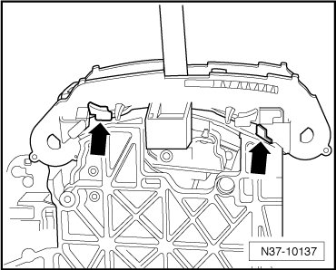

Cover Strips/Frame
Cover Strips/Frame
Removing
- Remove shift mechanism cover. Refer to --> [ Shift Mechanism Cover ] Shift Mechanism Cover.
- Pull the retaining clips - arrows - outward on left and right and remove the cover strips/frame upward.

Installing
Installation is performed in the reverse order of removal.
- Install shift mechanism cover. Refer to --> [ Shift Mechanism Cover ] Shift Mechanism Cover.